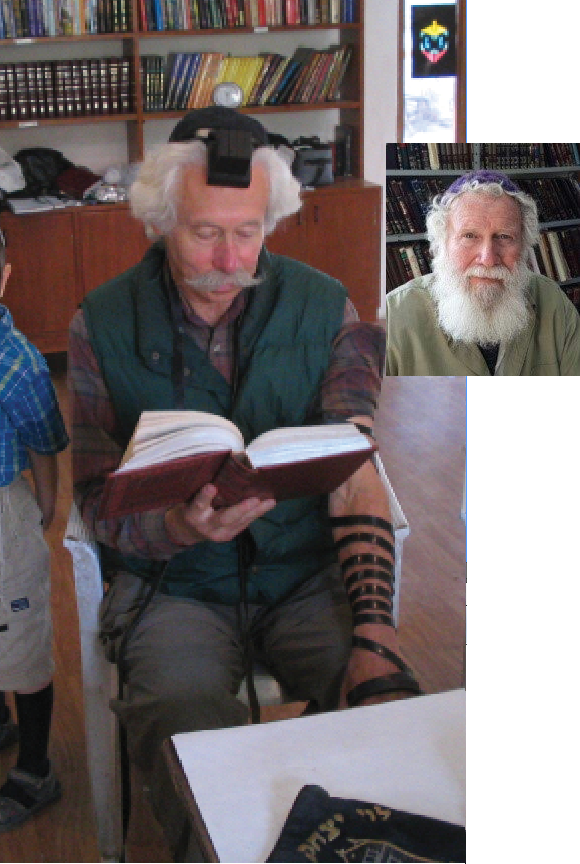

המילים הבהירות של התניא חדרו ללבו ולנפשו, והוא החל להתקרב ליהדות, עד ששינה את תכ
המילים הבהירות של התניא חדרו ללבו ולנפשו, והוא החל להתקרב ליהדות, עד ששינה את תכניותיו והחליט להישאר בפושקר במשך תקופה כדי ללמוד עוד תניא. “הוא היה כל כך שקוע בלימוד שלנו”, מספר הרב גולדשטיין, “עד שבוקר אחד הגיע לבית חב”ד בבהלה וסיפר שחלם בלילה שהוא נלחם עם היצר הרע…”
המילים הבהירות של התניא חדרו ללבו ולנפשו, והוא החל להתקרב ליהדות, עד ששינה את תכניותיו והחליט להישאר בפושקר במשך תקופה כדי ללמוד עוד תניא. “הוא היה כל כך שקוע בלימוד שלנו”, מספר הרב גולדשטיין, “עד שבוקר אחד הגיע לבית חב”ד בבהלה וסיפר שחלם בלילה שהוא נלחם עם היצר הרע…”

הרב גולדשטיין הוא שליח הרבי מה”מ בעיר פושקר שבהודו. מדי יום הוא מוסר שיעור בתניא עבור המטיילים הישראלים הרבים שמגיעים לבקר בבית חב”ד שבהנהלתו. בזכות שיעוריו של הרב גולדשטיין, רבים מהם התקרבו לחיי תורה ומצוות, ועשרות רבות הקימו במשך השנים בתים חסידיים לכל דבר ועניין. הכל התחיל בשיעורים שהוא מוסר.
מסתבר שסוד ההצלחה שלו היא לאו דווקא בשיעורים, כפי שהוא עצמו מספר ומשתף:
“מדי ערב בשעה שבע מתחיל אצלנו שיעור קבוע בספר התניא לבאי בית חב”ד. חלק מהאנשים מגיעים לבית חב”ד כדי לאכול, חלק מגיעים כי נקשרו למקום, חלק מגיעים כי חבר ‘סחב’ אותם, כל אחד מסיבותיו. ורבים מהם מתיישבים להשתתף בשיעור.
“השיעור אצלי הוא רק אמצעי. בדרך בכל שיעור משתתפים כעשרים אנשים, מתוכם אני מבחין באחד או שניים שהעניין אכן נוגע להם, מדבר לנפשם, והם באמת ‘כלים’ וכשירים לקבל ולהכיל לעומק את הרעיונות החסידים.
“אולם עיקר העבודה מתחילה לאחר השיעור - לתפוס את אותו אחד או שניים שמתעניינים באמת, לחברותא אישית. לדעתי, אין כמו חברותא. אדם יכול להשתתף עשרים שנה בשיעור חסידות או תניא, ולא יזוז בו כלום ברמה המעשית.
גם כאשר מצאתי בשיעור שניים או שלושה שמתחברים לעומק המסרים, למדתי שלא לאחד אותם לשיעור אחד, אלא לקבוע חברותא אישית עם כל אחד מהם. חברותא פירושה להתוועד איתו ברמה שלו ובשפה שלו. החיבור הוא יותר חזק והוא אתך, זה מלבד העובדה שהוא מבין אותך וחי אותך, בעוד שבשיעור זה בגדר ‘מקיף’. חברותא זה עולם אחר לחלוטין מאשר שיעור כוללני”.
הסיפור הבא, הוא סיפור נשמה המעיד יותר מכל על ההשפעה של ספר התניא בפרט, וחסידות בכלל, על נשמה של יהודי.
• • •
באחד הימים נכנס לבית חב”ד יהודי שהיה נראה אמנם צעיר במיוחד, אך בפועל היה בגיל 65 ואולי אף יותר מכך. הוא היה בעיצומו של טיול עם זוגתו בערים שונות ברחבי הודו הגדולה…
משהגיע לבית חב”ד, התיישב בהשגחה פרטית עם כוס קפה ליד השולחן בו ישב באותה עת הרב גולדשטיין ולמד תניא בחברותא עם בחור צעיר, אחד מאותם אלפי צעירים הפוקדים את בית חב”ד בפושקר מדי שנה. מזווית עינו הבחין הרב גולדשטיין שהאורח מקשיב הקשבה של ממש. הקשבה זו נמשכה גם שעה ארוכה אחרי שהלה התיישב. בחושיו המחודדים ומנסיונו הרב הבין הרב שימי, כי דברים בגו.
כשהסתיים השיעור, קם אותו מטייל כשהוא נרגש ושאל אם גם הוא יכול להצטרף ללימוד בחברותא… הרב גולדשטיין חשש במקצת והתחמק. הוא העדיף להמשיך ללמוד עם הצעיר שגילה סימני רצינות בלימוד ולא עם מטייל מזדמן שזה עתה הגיע ואולי הוא מתלהב לרגע, ולא יותר… הוא הציע אפוא לאורח להשתתף בשיעור הכללי המתקיים בשעות הערב, בו כולם יושבים סביב השולחן ומקשיבים. הוא הוסיף כי הוא כבר נמצא בעיצומו של הלימוד עם החברותא, ומה גם שהוא לומד בחברותא רק עם מי שנמצא בבית חב”ד במשך תקופה.
כל זה לא עזר. הלה התעקש ואמר שהוא חייב… זה היה השלב שבו הציג את עצמו: בר שפירא.
מאז הגיע אותו מטייל מדי בוקר לבית חב”ד והשתתף בחברותא בלימוד התניא, כשהוא מקשיב בהשתוקקות רבה ובולע כל מילה בצימאון רב. ההתלהבות שלו הלכה וגדלה מיום ליום.
המילים הבהירות של התניא חדרו ללבו ולנפשו, והוא החל להתקרב ליהדות, עד ששינה את תכניותיו והחליט להישאר בפושקר במשך תקופה כדי ללמוד עוד תניא. “הוא היה כל כך שקוע בלימוד שלנו”, מספר הרב גולדשטיין, “עד שבוקר אחד הגיע לבית חב”ד בבהלה וסיפר שחלם בלילה שהוא נלחם עם היצר הרע… תוך כדי חלום תפס את ידו וצבט אותה עד שנהיו לו סימנים כחולים…
עם הזמן, במהלך התקרבות ליהדותו, הבין שהוא לא יכול להמשיך לחיות עם זוגתו, שכן הוא כהן והיא גרושה. זה היה מצב לא פשוט כלל ועיקר.
אחרי תהליך ממושך של לימוד והתקרבות ליהדות, חזרו השניים לארץ ישראל. הוא הבין כי עליו לקבל החלטה כבדה, כבדה מאד… מתוך מסירות נפש ‘קפץ למים’ וקיבל החלטה קשה - לוותר על החיים הזוגיים שלו איתה. החלטה זו גרמה לכך שהוא הפסיד לא רק את חיי הזוגיות שלו, אלא גם את כל כספו.
במקביל, קיבל החלטה להיכנס לישיבה ולשקוע בלימוד התורה. הוא אכן הלך לישיבה, שם קבע את מקומו ללא אישה וללא כסף, העיקר לחזור בתשובה שלימה אל אביו שבשמים… במשך שנים אחדות עשה את התהליך הנפלא הזה, עד שחייו התהפכו מן הקצה אל הקצה.
לפני כמחצית השנה חלה במחלה קשה, ולפני חודש השיב את נשמתו לבוראה.
מי מאתנו יכול לדעת לחקרה של נשמה?!….
שיהיה סיפור זה לעילוי נשמתו.